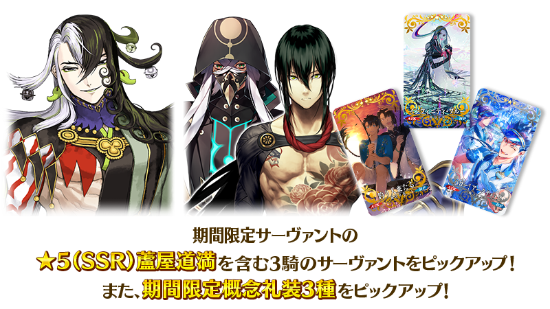
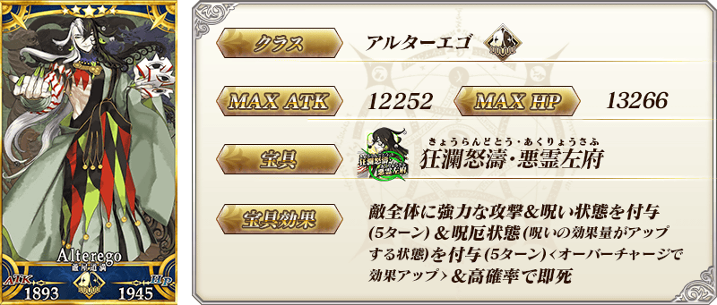
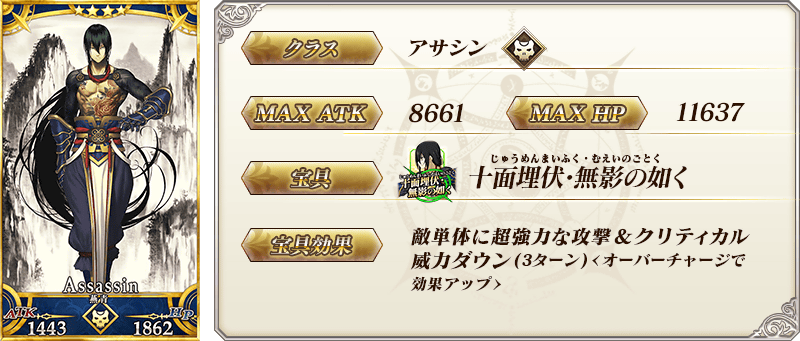
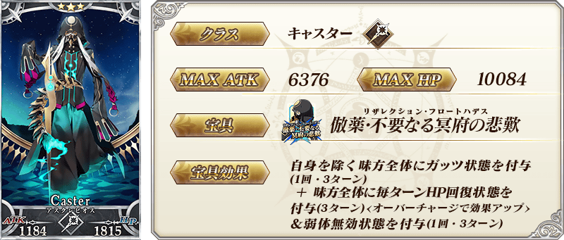
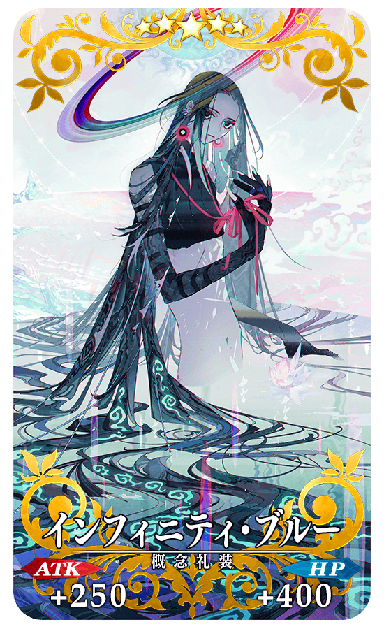
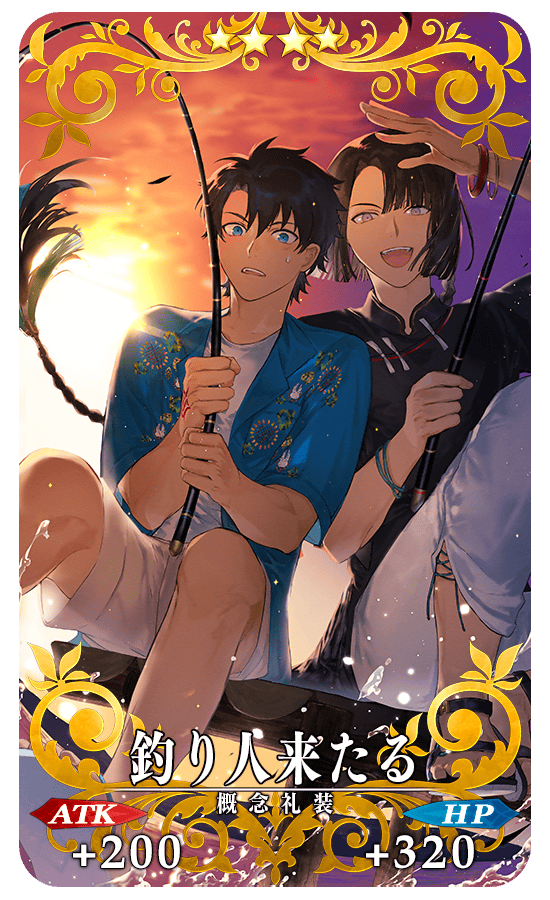
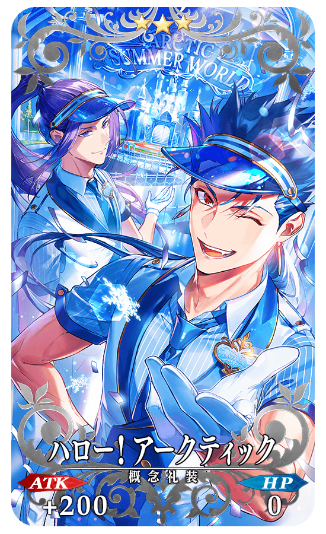
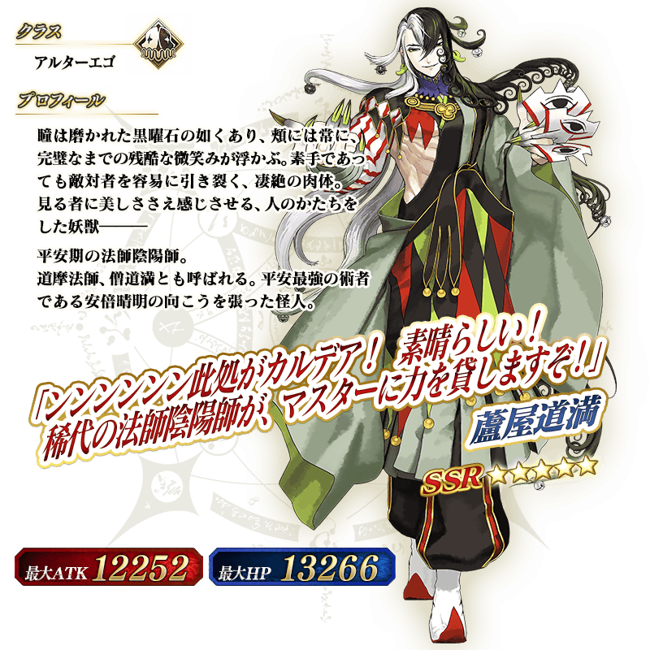
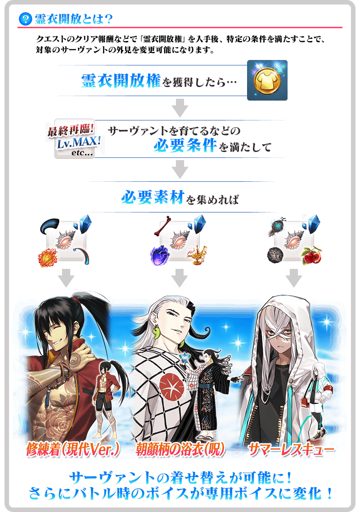

◆「北極夏日世界！ 蘆屋道滿Pick Up召喚」期間◆
期間:2022年8月10日(三) 20:00～8月31日(三) 11:59
為了記念期間限定活動「北極夏日世界！ ～迦勒底盛夏的魔園觀光～」的舉辦，包含期間限定從者「★5(SSR)蘆屋道滿」的3位從者與3種期間限定概念禮裝Pick Up！

【Pick Up對象】
▼期間限定從者
・★5(SSR)蘆屋道滿
▼永久從者
・★4(SR)燕青(新宿的Assassin)
▼故事召喚從者
・★3(R)阿斯克勒庇俄斯
▼期間限定概念禮裝
・★5(SSR)インフィニティ・ブルー
・★4(SR)釣り人来たる
・★3(R)ハロー！アークティック
裝備3種Pick Up對象期間限定概念禮裝的話，在期間限定活動「北極夏日世界！ ～迦勒底盛夏的魔園觀光～」中會提升活動道具的掉落獲得數。
Pick Up期間中，Pick Up對象從者與概念禮裝的出現機率提升！
詳情請在聖晶石召喚畫面左下的召喚詳細確認。
11次召喚中確定1張★4(SR)以上和確定1位★3(R)以上的從者！ ※確定★4(SR)以上包含從者和概念禮裝。 ※本頁面皆為開發中圖片。會有與實際圖片相異的情況。 ※在2018年12月31日(二) 23:00以後新配信的主線故事及期間限定活動、一部份關卡、宣傳活動及召喚中，會顯示隱藏真名的對象從者真名。
【重要】
◆關於「確定召喚」功能◆
・期間限定Pick Up召喚中，在329次以內未召喚到Pick Up對象★5(SSR)從者情況，只限1次可在進行第330次的召喚時「確定召喚」必定1位Pick Up對象★5(SSR)從者。
・在同時間舉辦多個期間限定Pick Up召喚的情況，各召喚分別(每個召喚畫面頁面)計算召喚次數。另外，以每日交替Pick Up召喚的內容切換情況，各自分別計算召喚次數。舉例，每天23:00時間點變更召喚內容的Pick Up召喚情況，請注意在召喚內容變更的時間點會重置召喚次數的計算。
・請注意期間限定Pick Up召喚中滿足以下任何條件的話，在召喚畫面會顯示「Pick Up對象確定召喚已結束。(ピックアップ対象の確定召喚は終了しました。)」，該召喚中「確定召喚」功能變成無效。
・第329次前召喚到Pick Up對象★5(SSR)從者
・在第330次確定召喚到Pick Up對象★5(SSR)從者
・召喚次數在期間限定Pick Up召喚中用有償聖晶石、無償聖晶石、呼符進行召喚時都會計算。目前的召喚履歴可於該召喚畫面內確認。
※每10次召喚進行的「＋1次獎勵召喚」與用有償聖晶石進行的1天1次限定「1次召喚」也在計算的對象。
※每個召喚內容會分開計算「＋1次獎勵召喚」與1日1次限定的「1次召喚」。請注意在變更召喚內容那天的23:00，「＋1次獎勵召喚」和「1次召喚」的計算會被重置。
※透過有償聖晶石1個「1次召喚」的計算，也會在每天3:00重置。
・在進行11次召喚時滿足「確定召喚」功能條件的情況，在施行11次召喚中會確定召喚1位Pick Up對象★5(SSR)從者。屆時，11次召喚中保障的確定1張★4(SR)以上與確定1位★3(R)以上的從者會另外生效。
・期間限定Pick Up召喚結束後，無法繼承召喚次數到別的召喚。
・故事召喚、友情點數召喚為「確定召喚」功能的對象外。
◆關於1天1次限定的有償聖晶石召喚◆
※可以1天1次限定於期間限定召喚用有償聖晶石1個進行「1回召喚」。
※透過有償聖晶石1個的「1次召喚」，每天3:00重置。
※透過有償聖晶石1個的「1次召喚」對應的聖晶石召喚有好幾個的情況，各個召喚中1天各進行1次有償聖晶石1個的「1次召喚」。
※請注意就算進行透過有償聖晶石1個的「1次召喚」，不包含在1次獎勵的計算。
※聖晶石購入時賦予的「附贈(オマケ)」是做為無償聖晶石而不包含在有償聖晶石的個數，請注意別搞錯。另外，持有聖晶石的細項，可從持有道具一覧確認。
◆關於透過召喚獲得從者硬幣◆
在期間限定召喚、故事召喚、友情點數召喚中入手從者時，可獲得該從者的從者硬幣。
◆有關從者的注意◆
※下述的從者在Pick Up期間結束後不會追加到故事召喚。
・★5(SSR)蘆屋道滿
※有成為Pick Up對象召喚的期間中，透過故事進行所追加的下述從者就算通過各章前也能入手。
・★3(R)阿斯克勒庇俄斯
※下述的從者在Pick Up期間結束後仍會在故事召喚被抽出。
・★4(SR)燕青(新宿的Assassin)
・★3(R)阿斯克勒庇俄斯
※關於隱藏真名尚未判明的從者，透過主線關卡的進行會讓從者及一部份寶具的名稱變化。
◆有關概念禮裝的注意◆
※請注意成為抽出對象的期間限定概念禮裝只限下述，其他的期間限定概念禮裝為抽出對象外。
・★5(SSR)インフィニティ・ブルー
・★4(SR)釣り人来たる
・★3(R)ハロー！アークティック
※下述的概念禮裝，Pick Up期間中也能靠友情點數召喚獲得。
・★3(R)ハロー！アークティック
※在自動變還設定登錄★3(R)概念禮裝的情況，下述的概念禮裝會變成自動變還的對象。
・★3(R)ハロー！アークティック

期間限定從者

※「★5(SSR)蘆屋道滿」就算靈基再臨過卡面及戰鬥角色等也變化到第2階段為止。
想變化到第3階段以上的話必須通過『靈基解放關卡』。
※持有「★5(SSR)蘆屋道滿」的話，「★5(SSR)蘆屋道滿」的『靈基解放關卡』會登錄到「幕間物語」。
(雖然登錄到「幕間物語」，但沒有文字冒險部份)
※「★5(SSR)蘆屋道滿」的『靈基解放關卡』在「★5(SSR)蘆屋道滿」靈基再臨到第3階段後開放。
※請注意「★5(SSR)蘆屋道滿」的『靈基解放關卡』的『靈基解放關卡』不計算在Extra(エクストラ)任務的「通過幕間物語〇個」。
常駐從者

故事召喚從者

期間限定概念禮裝
|  |
★★★★★SSR
◆最大解放時效果◆
|
|  |
★★★★SR
◆最大解放時效果◆
|

|  |
★★★R
◆最大解放時效果◆
|

「★5(SSR)蘆屋道滿」「★4(SR)燕青(新宿的Assassin)」「★3(R)阿斯克勒庇俄斯」的靈衣開放權做為期間限定活動「北極夏日世界！ ～迦勒底盛夏的魔園觀光～」的報酬登場！
本活動中可靠活動道具交換入手上述靈衣開放權。
另外，想開放靈衣的話，除了靈衣開放權外再加上必須滿足一些開放條件。
◆有關靈衣開放權的注意◆
※「★5(SSR)蘆屋道滿」「★4(SR)燕青(新宿的Assassin)」「★3(R)阿斯克勒庇俄斯」的靈衣開放權只限期間限定活動「北極夏日世界！ ～迦勒底盛夏的魔園觀光～」的活動道具交換期間才能入手。
※「★5(SSR)蘆屋道滿」「★4(SR)燕青(新宿的Assassin)」「★3(R)阿斯克勒庇俄斯」的靈衣會隨著外觀變化一部份語音。
※請注意未持有「★5(SSR)蘆屋道滿」「★4(SR)燕青(新宿的Assassin)」「★3(R)阿斯克勒庇俄斯」的情況，可入手靈衣開放權。但無法進行靈衣開放。


「靈衣開放」是自強化畫面進行。
※「靈衣開放」後會自動切換戰鬥角色和外觀圖片。若想回到「靈衣開放」前的狀態和變成其他再臨階段的情況，可自從者詳細畫面變更。 ※進行「靈衣開放」不會讓職階和能力等有所變化。
介紹追加靈衣的3位從者的靈衣開放後寶具演出！
介紹開放靈衣「朝顔柄の浴衣(呪)」「修練着(現代Ver.)」「サマーレスキュー」的3位從者寶具演出！
「Fate/Grand Order」在官方網站內的公告中，以影片公開寶具演出，敬請確認。
【朝顔柄の浴衣(呪)】
【修練着(現代Ver.)】
【サマーレスキュー】
介紹在本召喚Pick Up的3位從者寶具演出！
【★5(SSR)蘆屋道滿】
【★4(SR)燕青(新宿的Assassin)】
【★3(R)阿斯克勒庇俄斯】
其他還有，
・北極夏日世界！ ～迦勒底盛夏的魔園觀光～
・北極夏日世界！ 阿瓦隆女士Pick Up召喚
以期間限定舉辦中！
並且，
・北極夏日世界！ 伊吹童子(Berserker)Pick Up召喚
・北極夏日世界！ 斯卡薩哈＝斯卡蒂(Ruler)Pick Up召喚
預定舉辦！
關於詳情，請自下述橫幅確認。
■「北極夏日世界！ ～迦勒底盛夏的魔園觀光～」詳細情報

■「北極夏日世界！ 阿瓦隆女士Pick Up召喚」詳細情報

■「北極夏日世界！ 伊吹童子(Berserker)Pick Up召喚」詳細情報

■「北極夏日世界！ 斯卡薩哈＝斯卡蒂(Ruler)Pick Up召喚」詳細情報